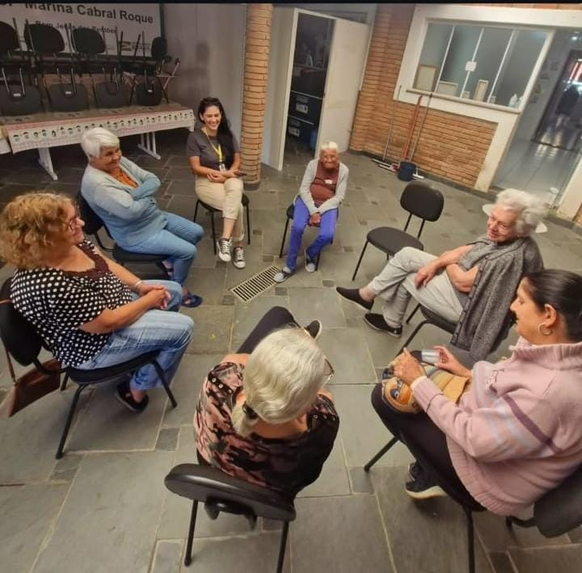

Dinâmicas com Idosos
Desenvolvo ações socioeducativas e dinâmicas de grupo como educadora social no SCFV / CRAS de Bom Jesus dos Perdões. O trabalho integra palestras e rodas de conversa alinhadas a grandes campanhas (como Maio Laranja, Agosto Lilás e Setembro Amarelo), promovendo saúde mental, conscientização feminina e suporte temático em luto, perdas, vínculos afetivos, memória, autoestima e fases da vida.